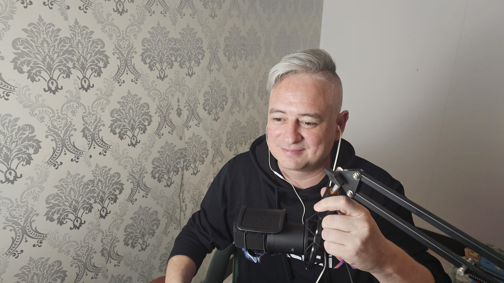

Studio
Podcast, live production, recording, guests, scenes, sound, and Moxie in one production workspace.
Explore Studio
Toasty Media
One media company for producing conversations, finding the right people, publishing ideas, and bringing experience into the room.



What lives here
Podcast, live production, recording, guests, scenes, sound, and Moxie in one production workspace.
Explore StudioFind, qualify, and reach the right people, then carry the accepted conversation into a Jam.
Explore PeepsPublished thinking from Toasty Media, beginning with The Eloquence Protocol.
See booksRicardo Casanova for keynotes, executive sessions, advisory, panels, and complex technology conversations.
Work with RicardoToasty Studio
Record it. Produce it. Go live when you want.
Bring guests into the room, direct the session, record the program, stream live, and keep production intelligence inside the same workspace.
Toasty Peeps
Discover
Describe who you need and why. Peeps discovers and qualifies people based on relevant experience and evidence.
Jam
Once both sides consent, Peeps carries the relationship into scheduling, preparation, and a Toasty Studio Jam.
Open PeepsAccount
Open your profile, matches, Jams, Dough, and Breadcrumbs from the Peeps app.
Peeps sign in.jpg)
Speaking & Advisory
Keynotes, panels, executive sessions, advisory, and moderated conversations led by Ricardo Casanova.
Books
Toasty Books
A practical framework for high-status communication, leadership, and presence.
View the book